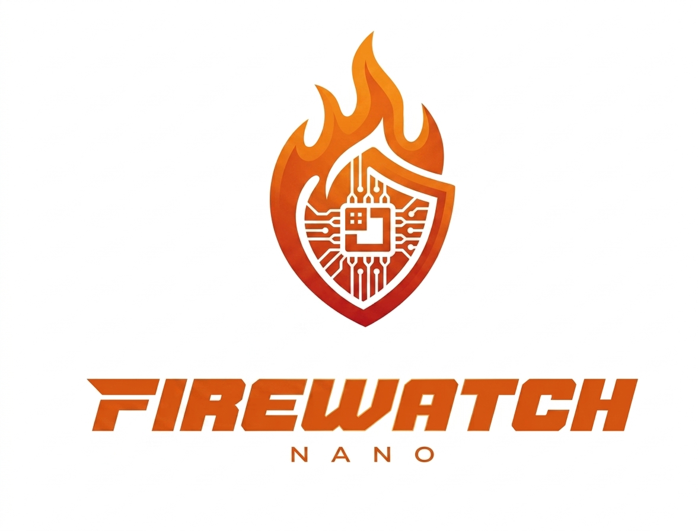
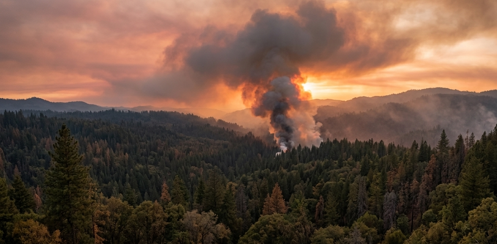
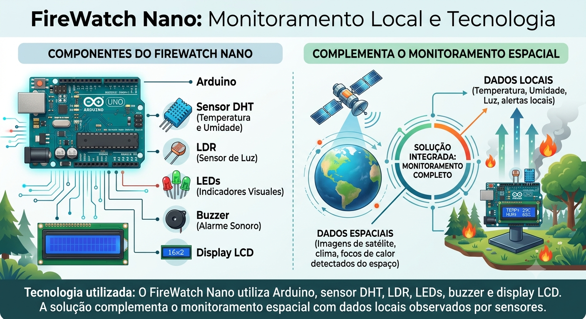
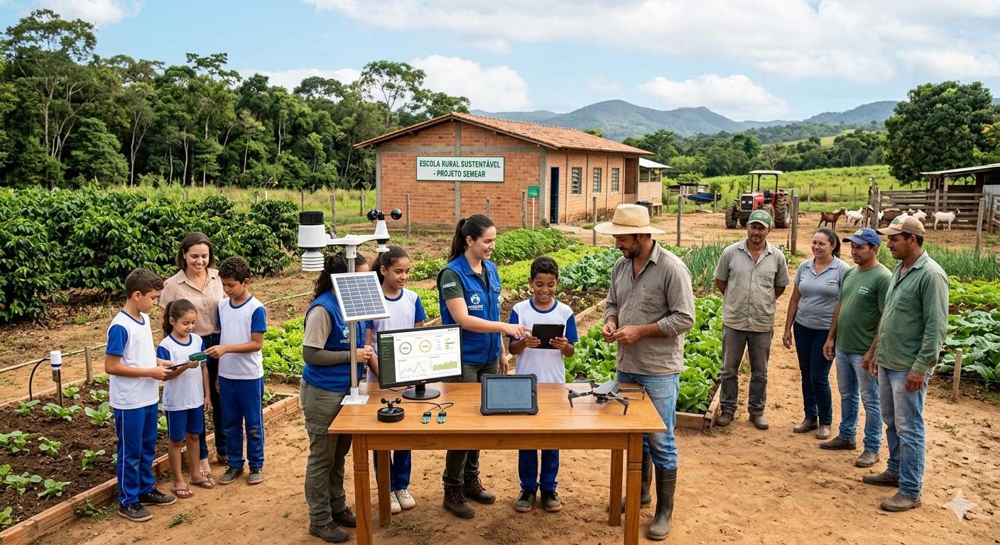
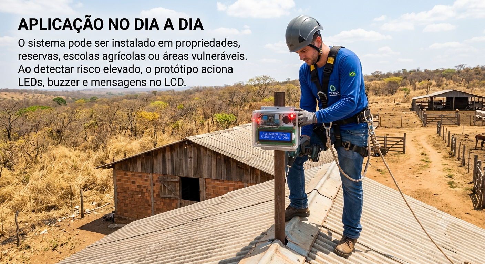

🌡️
Monitorar
Identificar temperatura, umidade e luminosidade em áreas vulneráveis.
Sensores locais, alertas rápidos e apoio ao monitoramento ambiental conectado à tecnologia espacial.
Conheça a solução
Incêndios em áreas rurais e florestais causam danos ambientais, sociais e econômicos todos os anos.
Muitas regiões remotas possuem pouca infraestrutura para monitorar riscos antes que o fogo se espalhe.

O FireWatch Nano utiliza Arduino, sensor DHT, LDR, LEDs, buzzer e display LCD.
A solução complementa o monitoramento espacial com dados locais observados por sensores.

O sistema transforma dados ambientais simples em alertas preventivos e compreensíveis.
Identificar temperatura, umidade e luminosidade em áreas vulneráveis.
Calcular o risco e indicar níveis baixo, médio ou alto.
Acionar LEDs, buzzer e mensagens para apoiar decisões rápidas.
A solução é voltada para comunidades rurais, produtores agrícolas, escolas e agentes ambientais.
Também apoia projetos educacionais ligados à sustentabilidade, tecnologia e prevenção de desastres.

O FireWatch Nano oferece baixo custo, leitura simples e alertas objetivos.
Utiliza componentes simples e acessíveis em simuladores e protótipos.
Classifica o risco e aciona sinais visuais e sonoros automaticamente.
Ajuda a identificar condições críticas antes que o fogo se espalhe.
O sistema pode ser instalado em propriedades, reservas, escolas agrícolas ou áreas vulneráveis.
Ao detectar risco elevado, o protótipo aciona LEDs, buzzer e mensagens no LCD.
